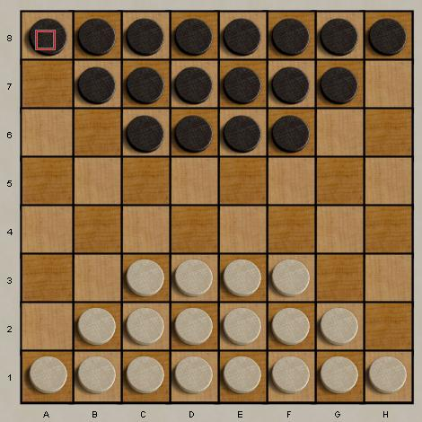

Dameo is a checkers variant with twists on the familiar rules of International Checkers.
- the board size is 8x8, initially with 18 men per side, with the initial layout shown.
- ordinary pieces can move forward or diagonally forward, and can jump a continuous row of their own color
- ordinary pieces capture orthogonally in all 4 directions. Maximal captures are required.
- kings "fly" and move freely in all 8 directions, but cannot jump own pieces.
- kings "fly" and capture in all 4 orthogonal directions. Maximal captures are required.
A useful introduction to Dameo play can be found here. |  |